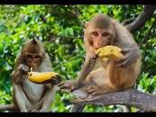

My pet is a monkey called Jojo. He is a native of the african rainforest.He was rescued from poachers after a succesful raid was conducted by kws officers luckily enough he wasn't injured.
His favorite time of the day is definitely during meal time. Jojo loves fruits very much and sometimes will fake illnesses so as to get extra fruits.
Here is an image of Jojo enjoying a fruit.
Here are some interesting facts about Monkeys